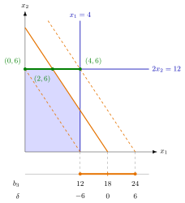

Input: a linear program in standard form maxZ=c⊤x subject to Ax≤b,x≥0 with m constraints, an optimal basisB∗ with basis matrix B and cost vector cB, and a change of one right-hand side, bi′=bi+δ with δ∈R, all other data fixed. In the tableau, c,A and x are extended by the slack variables s1,…,sm of the m constraints (objective coefficient 0, columns e1,…,em), so the final tableau in matrix form is
Read off B−1b, the current values of the basic variables, and the i-th column B−1ei of B−1, the column of the slack si.
With b′=b+δei, the basis B∗ stays feasible if and only if
B−1b′=B−1b+δB−1ei≥0,
that is, (B−1b)k+δ(B−1)k,i≥0 for k=1,…,m.
Solve row by row. A row with (B−1)k,i>0 gives the lower bound δ≥−(B−1b)k/(B−1)k,i, a row with (B−1)k,i<0 gives an upper bound by the same formula, and a row with (B−1)k,i=0 gives no condition. Let δmin be the largest lower bound (−∞ if there is none) and δmax the smallest upper bound (+∞ if there is none). Since B−1b≥0,δmin≤0≤δmax.
For δmin≤δ≤δmax the reduced costs are unchanged, so B∗ is still optimal. The new optimal solution is xB=B−1b′,xN=0 for the nonbasic variables, with value
Z∗(δ)=cB⊤B−1(b+δei)=Z∗+yi∗δ,
where y∗⊤=cB⊤B−1 is the optimal dual solution. For δ outside the interval, B∗ is infeasible and the linear program has to be solved again.
Right-hand-side ranging asks how far the capacity bi of one resource, the right-hand side (RHS) of its constraint, may move before the optimal basis stops being optimal. A change of b only touches the right-hand-side column of the tableau: the reduced costs −c⊤+cB⊤B−1A do not contain b and stay nonnegative. The basis therefore stays optimal exactly as long as it stays feasible, and the whole analysis is a sign check of B−1b′.

The figure shows Example 1 below. The shaded region is the feasible region for b3=18, and the orange lines are 3x1+2x2=b3 for b3=12,18 and 24; the scale below reads b3 off the x1-interceptb3/3 of the moving line. Throughout the range −6≤δ≤6 the same two constraints 2x2=12 and 3x1+2x2=b3 are binding, so the optimal corner (3b3−12,6) slides along the green segment from (0,6) to (4,6) while Z∗=36+δ runs from 30 to 42. At b3=12 the corner reaches x1=0, and at b3=24 it reaches x1=4, that is, s1=0: these are the two rows 2+31δ≥0 and 2−31δ≥0 that bound the range.
Keep the basis and the solution apart. Inside the range the same constraints stay binding, but they cross at a different point: the basic values move linearly in δ, and so does Z∗, with slope yi∗, the shadow price read under the slack column of si in the objective row. In Example 1 the basis survives while the optimal solution moves from (2,6) to (1,6). At an endpoint of the range some basic variable reaches 0, so the basic solution is degenerate; beyond it the basis is infeasible and, if the linear program is still feasible, another basis takes over, usually with a different slope (Example 4 below). If si is basic, extra units of resource i would stay unused: the range is unbounded above and yi∗=0.
This is the matrix form of the right-hand-side sensitivity range of OR Modelling, which reads the same interval off a graph or an Excel report as an allowable decrease and increase. A common slip is to combine two separately computed ranges: they hold for one change at a time, and a simultaneous change of several entries needs the full check B−1b′≥0.
A change of b affects only B−1b and cB⊤B−1b in the final tableau, so an optimal basis remains optimal as long as it remains feasible.
For bi′=bi+δ the basis B∗ remains optimal if and only if B−1b+δB−1ei≥0; these δ form a closed interval that contains 0 and is bounded on at least one side, since B−1ei=0.
Inside that interval Z∗(δ)=Z∗+yi∗δ with yi∗=(cB⊤B−1)i, the unit worth or shadow price of resource i.
A basis that stays optimal does not keep the optimal solution: xB=B−1b′ changes in every row with (B−1)k,i=0 (Example 1 below).
If the slack si is basic in B∗ with value si∗, then B−1ei is a unit vector (because B−1B=Im), the range is δ≥−si∗ and yi∗=0 (Example 3 below).
1. A tighter third resource. For maxZ=3x1+5x2 subject to x1≤4,2x2≤12,3x1+2x2≤18,x≥0, with slack variables s1,s2,s3, the final tableau has basis (s1,x2,x1) with B−1b=(2,6,2)⊤ and third column B−1e3=(−31,0,31)⊤. The basis stays feasible if 2−31δ≥0 and 2+31δ≥0, so −6≤δ≤6, that is, 12≤b3≤24. For b3=15(δ=−3):(s1,x2,x1)=(3,6,1), so x∗=(1,6) and Z∗=33=36+1⋅(−3), with y3∗=1. The basis is still optimal, but the old solution (2,6) is not even feasible any more.
2. A range bounded on both sides. For max2x1−x2+x3 subject to 3x1+x2+x3≤60,x1−x2+2x3≤10,x1+x2−x3≤20,x≥0, with slack variables x4,x5,x6, the optimal basis (x1,x2,x4) has B−1b=(15,5,10)⊤,B−1e3=(21,21,−2)⊤ and y∗=(0,23,21)⊤,Z∗=25. For b3′=20+λ the conditions 15+21λ≥0,5+21λ≥0,10−2λ≥0 give −10≤λ≤5. For b3′=22 the basis stays optimal with (x1,x2,x4)=(16,6,6),x3=0, and Z∗=25+21⋅2=26.
3. All three ranges and an endpoint. For max4x1+x2+5x3 with constraints x1+x2+x3≤4,2x1+x2+3x3≤10,3x1+x2+4x3≤16,x≥0, and slack variables x4,x5,x6, the optimal basis (x1,x3,x6) has
B−1=3−2−1−11−1001,B−1b=222,y∗=210,
and Z∗=18. The columns of B−1 give −32≤δ1≤1,−2≤δ2≤2 and δ3≥−2, so b1∈[310,5],b2∈[8,12],b3∈[14,∞). The third resource is not used up (x6=2), so its shadow price is 0; the first two are worth 2 and 1 per unit. For b2′=12, the upper endpoint, (x1,x3,x6)=(0,4,0), so x∗=(0,0,4) with Z∗=18+1⋅2=20, a degenerate optimal solution.
4. Beyond the range. In Example 1 above take b3=26(δ=8>6). The formula would give s1=2−38<0, so the basis is infeasible. The true optimum is (4,6) with Z∗=42, not 36+8=44: above b3=24 the third resource has spare capacity and extra units are worth 0. Below the range the rate goes up instead: for b3=10 the optimum is (0,5) with Z∗=25, less than the 36−8=28 that the old shadow price predicts.
Aliases: changing the right-hand side, right-hand-side sensitivity analysis, range of a right-hand side, unit worth of a resource
Keywords: \boldsymbol{B}^{-1}(\boldsymbol{b}+\delta\boldsymbol{e}i)\geq\boldsymbol{0}, Z^+y_i^\delta, \boldsymbol{y}^{*\top}=\boldsymbol{c}, shadow price, optimal basis versus optimal solution, change of a resource capacity
Symbols: delta, element of, infinity, lambda, real numbers
}}^{\top}\boldsymbol{B}^{-1
Last updated: 10 November 2026 16:43
Right-Hand-Side RangingBasis and Basis MatrixSimplex Tableau in Matrix FormDual Solution from the Simplex TableauSensitivity AnalysisObjective Coefficient RangingChanging a Technology CoefficientAdding or Removing a VariableStrong DualityRight-Hand Side Sensitivity RangeShadow Price in Linear ProgrammingDegeneracyShadow Price in Constrained Optimization